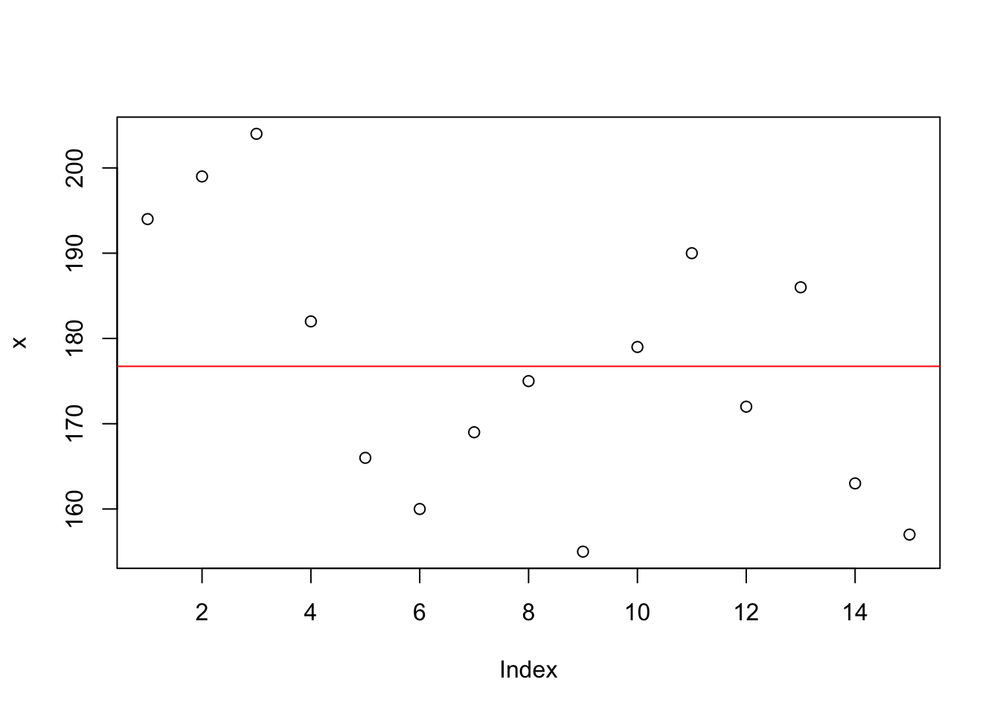

Chapter 6 Kovarianz und Korrelation
6.1 Kurze Wiederholung
Datenstruktur in R
Vektoren, Data frames, Matritzen- Testdesigns
- experimentelle \(\leftrightarrow\) nicht-experimentelle Forschung
- unabhängige Variable (UV), abhängige Variable (AV), Moderatorvariable, Störvariable
- Kontrolle von Störvariable: Randomisierung, Filler
- Latin Square Designs
- Skalenniveaus
- diskret \(\leftrightarrow\) stetig
- kategorisch \(\leftrightarrow\) binär
- Masse zentraler Tendenz
- Median, Modus, Mittelwert
- Median: bei gerade n-Anzahl, bei ungerade n-Anzahl
- Quantile: teilt Daten in gleich gro{}e Teile
unterschieden nach Quartile, Dezile, Perzentile
6.2 Streuungsmaße
- Modelle zur Beschreibung der Daten
- bisher: Mittelwert, Median, Modus, Quantile
- Was ist das Problem bei der Beschreibung dieser Daten?
- Maße zentraler Tendenz liefern Information über “Zentrum” der Verteilung – ohne Information, wie die meisten Beobachtungswerte verteilt sind
- Abweichungen der Beobachtungswerte vom “Zentrum” durch sogenannte Streuungsmaße beschrieben
- je kleiner Streuungsmaß, umso besser Häufigkeitsverteilung durch Maß der zentralen Tendenz (“Zentrum”) beschrieben
- Spannweite
- Quartils- und Quantilsabstände
- Quadratsummen, Varianz, Standardabweichung
- Median der absoluten Abweichungen
6.3 Spannweite (“range”)
Spannweite Die Spannweite ist der Abstand vom größten zu kleinstem Beobachtungswert.
\[\begin{equation} R = x_{max} - x_{min} \end{equation}\]Die Spannweite umfaßt gesamten Streubereich der Beobachtungen. Die Spannweite ist sehr empfindlich gegenüber Extremwerten (Ausreißer), da sie vom kleinsten und größten Beobachtungswert abhängt.
range(x)- finde die Spannweite für die Opfer von Lungenkrankheiten in der UK zwischen 1974 und 1979 heraus
- die Datei gehört zu R und heisst ldeaths
6.4 Quartilsabstände
Der Quartilsabstand (interquartile range - IQR) wird als Differenz der Quartile Q.25 und Q.75 berechnet:
\[\begin{equation} IQR = \tilde{x}_{0.75} - \tilde{x}_{0.25} \end{equation}\]IQR ist die Länge des Bereichs, in dem 50% aller Messwerte liegen
Quartilabstand nicht empfindlich gegenüber Ausreißern
6.4.1 Quartilsabstände: Beispiel
Körpergröße von 15 Personen:
155, 157, 160, 163, 166, 169, 172, 175, 179, 182, 186, 190, 194, 199, 204
Quartile:
| \(Q_0\) | \(Q_{0.25}\) | \(Q_{0.5}\) | \(Q_{0.75}\) | \(Q_1\) |
|---|---|---|---|---|
| 155 | 163 | 175 | 190 | 204 |
Quartilsabstände IQR
\[\begin{equation} IQR = Q_{.75} - Q_{.25} = 190 - 163 = 27 \end{equation}\]6.5 Quantilsabstand
Der Quantilsabstand ist die Differenz zwischen dem \(p-\) und dem \((1-p)\)-Quantil:
\(0 < p < 0.5\)
- beschreibt die Länge des Bereichs, in dem annähernd \(100 \cdot (1-2p) \%\) der Beobachtungswerte liegen
Quantilsabstand: Beispiel
Körpergröße von 15 Personen:
155, 157, 160, 163, 166, 169, 172, 175, 179, 182, 186, 190, 194, 199, 204
\(5\%\) Quantile
| \(Q_0\) | \(Q_{.05}\) | \(Q_{.1}\) | \(Q_{.15}\) | \(Q_{.2}\) | \(Q_{.25}\) | \(Q_{.3}\) | \(Q_{.35}\) | \(Q_{.4}\) | \(Q_{.45}\) | \(Q_{.5}\) |
|---|---|---|---|---|---|---|---|---|---|---|
| 155.0 | 156.4 | 158.2 | 160.3 | 162.4 | 164.5 | 166.6 | 168.7 | 170.8 | 172.9 | 175.0 |
| \(Q_{.55}\) | \(Q_{.6}\) | \(Q_{.65}\) | \(Q_{.7}\) | \(Q_{.75}\) | \(Q_{.8}\) | \(Q_{.85}\) | \(Q_{.9}\) | \(Q_{.95}\) | \(Q_{1}\) | |
|---|---|---|---|---|---|---|---|---|---|---|
| 177.8 | 180.2 | 182.4 | 185.2 | 188.0 | 190.8 | 193.6 | 197.0 | 200.5 | 204.0 |
6.6 Beispiel
Was ist der Interqartilsabstand bei der Datei ldeaths?
IQR(x)6.7 Abweichungen vom Mittelwert

Die Summe der Abweichungen vom arithmetischen Mittel ergibt immer Null.
\[\begin{equation*} \sum_{i=1}^n (x_i - \bar{x}) = 0 \end{equation*}\]6.8 Quadratsumme: sum of squares
\[\begin{equation} QS = \sum_{i = 1}^n (x_i - \bar{x})^2 \end{equation}\]6.9 Durchschnitt der quadratischen Abweichungen
\(\rightarrow\) beschreibt Variabilität innerhalb einer Stichprobe
\[\begin{equation} \frac{QS}{n} = \frac{\sum_{i = 1}^n (x_i - \bar{x})^2}{n} \end{equation}\]6.10 Varianz
\[\begin{equation} s^2 = \frac{\sum_{i = 1}^n (x_i - \bar{x})^2}{n - 1} \end{equation}\]Erwartungstreue Eine Schätzfunktion ist erwartungstreu, wenn bei großer Stichprobe mittlerer Schätzfehler gegen Null geht. Einzelne Schätzwerte können vom Parameterwert abweichen, positive und negative Schätzfehler werden sich gegenseitig aufheben \(\rightarrow\) Durchschnitt genaue Schätzung des Parameters Zufallsvariable Funktion, die Ergebnissen eines Zufallsexperiments reelle Zahlen zuordnet zB. Würfeln: Zuordnung einer Zahl von 1-6 bei jedem Wurf
6.11 Varianz: warum teilt man durch n - 1?
Man will unbekannte Varianz einer Zufallsvariable durch Varianz geeigneter Beobachtungsreihe schätzen. Bei Division durch n-1 ist Schätzung von Varianz erwartungstreu, d.h. dass bei gro{}er Anzahl von Stichproben mittlerer Schätzfehler bei Schätzung der Varianz durch gemittelte Varianz der Stichproben in Nähe von Null liegt. (Division durch n unterschätzt systematisch Populationsvarianz)
Der Unterschied (ob durch n oder n-1 teilen) vor allem für kleine Stichprobenumfänge relevant. (je größer Stichprobenumfang, desto weniger fällt Unterschied bei praktischer Berechnung ins Gewicht)
6.12 Standardabweichung
Standardabweichung: s \[\begin{equation} s=\sqrt{s^2} = \sqrt{\frac{\sum_{i=1}^{n}(x_i - \tilde{x})^2}{n-1}} \end{equation}\]Gib die Standardabweichung für die Opfer von Lungenkrankheiten aus
sd(x)6.13 Standardabweichung und Varianz
Die Standardabweichung und Varianz gehören zu den am häufigsten benutzten Streuungsmaßen.
6.14 Median absolute deviation (MAD)
Das MAD-Maß ist der Median der absoluten Abweichungen vom Median
\(\tilde{x} = median\)
Wie würden Sie den MAD der absoluten Abweichungen berechnen?
Wie wird der Median berechnet und welche Schrittabfolge berechnet den MAD?
6.15 R Befehle
#Kleinster und größter Wert des Vektors x
range(x)
#Quartilsabstand der Werte des Vektors x
IQR(x)
#Varianz der Werte des Vektors x
var(x)
#Standardabweichung der Werte des Vektors x
sd(x)#z-Transformation Werte des Vektors x
scale(x)
# Paket für deskriptive Statistiken
library(psych)
# Deskriptive Statistiken Werte des Vektors x
describe(x)
# Deskriptive Statistiken Werte des Vektors x
# für Gruppierung nach Vektor y
describeBy(x,y)